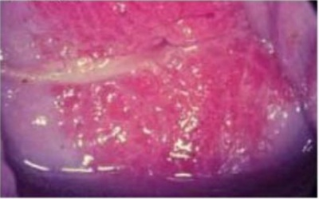
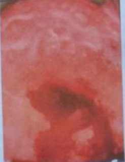

Mulher, 40 anos de idade, foi atendida na Emergência por apresentar dor pélvica há um dia. Primípara com parto normal há 4 anos. Refere ciclos menstruais regulares, última menstruação há oito dias. Método contraceptivo: coito interrompido. Também refere aparecimento de secreção amarelada por via vaginal, há três dias. O quadro clínico apresentado pela paciente pode evoluir com as seguintes sequelas:
Paciente 30 anos de idade, usuária de DIU (Dispositivo Intra-uterino) de cobre, procura ambulatório de planejamento familiar com sinais clínicos sugestivos de infecção por clamídia, assintomática. A conduta correta a ser tomada é:
Mulher, 20 anos, G0, apresentando sangramento irregular e sinusorragia há 3 meses, vem para avaliação. Antecedentes: menarca aos 11 anos, sexarca aos 15 anos. Tabagista. Pela história clínica, em relação as I.S.T., qual é o agente etiológico que precisaria ser investigado como causador destes sintomas?
Paciente de 25 anos de idade, sexualmente ativa, refere corrimento vaginal aumentado e sangramento ao coito há cerca de um mês. Ao exame, observa-se conteúdo vaginal amarelado, sem odor, em grande quantidade. O colo do útero apresenta área de ectopia sangrante 1 cm ao redor do orifício externo. Qual exame subsidiário está indicado e qual o agente etiológico em relação ao resultado?
A.M.L., 17 anos, com história de dispareunia e sinusorragia recentes. Contracepção: anticoncepcional hormonal oral. Ao exame físico: abdome ácido, vulva e vagina sem alterações, colo uterino com hiperemia, secreção turva e friável e toque vaginal normal. Qual o provável diagnóstico e a conduta mais adequada?
Paciente de 28 anos, G2C2, utiliza pílula anticoncepcional como método contraceptivo (contendo etinilestradiol 30 mcg + drospirenona 3 mg). O último parto foi há 2 anos. Está separada do marido. Não tem companheiro xo. Não usa preservativo. Refere último coito há 30 dias. Vem à consulta ginecológica queixando-se de corrimento claro, pequena quantidade, sem odor fétido. Refere disúria moderada. Exame especular: vulva e vagina sem alterações. Conteúdo vaginal claro, aspecto mucoide. Colo com ectopia e friabilidade com sangramento fácil da mucosa cervical. Toque: colo friável, corpo uterino em anteverso exão, tamanho normal. Anexos e paramétrios sem alterações. Nesse caso, qual a hipótese diagnóstica, o método diagnóstico e a conduta, respectivamente?
Em geral, o sangramento após a relação sexual, ocorre nas mulheres com idade entre 20 e 40 anos e mais frequentemente em multíparas. Dentre as causas envolvidas na etiologia, a cervicite pode ser citada e está frequentemente associada às infecções por:
Paciente foi ao ginecologista com queixa de corrimento vaginal e sangramento pós coito. Ao exame especular, presença de secreção mucopurulenta saindo do colo uterino. O Gram da secreção cervical revelou diplococos Gram negativos com leucócitos polimofonucleares. Foi solicitada a cultura da secreção. Baseado nos achados acima, qual agente etiológico espera-se encontrar?
Chlamydia trachomatis, uma bactéria intracelular obrigatória, está relacionada a várias infecções sendo improvável que seja o agente etiológico de
Se uma gestante que refere alergia à penicilina necessita tratamento para infecção por gonococo, a droga de escolha é:
ACL, 30 anos, comparece ao PSGO com queixa de dor em baixo ventre há 1 semana com piora. Nega atraso menstrual. MAC: anticoncepcional hormonal oral. Ao exame físico, corada, apirética e DB negativo. Ao especular: pequeno corrimento cervical. Toque doloroso sem outras alterações. Tem hemograma, urina e ultrasson normais. Hipótese e conduta:
Qual patógeno do trato genital inferior apresenta predileção por epitélio cilíndrico?
Paciente de 19 anos, vida sexual ativa, queixa-se de disúria e urgência miccional há aproximadamente uma semana. Ao exame especular observa-se cervicite mucopurulenta. No exame laboratorial: EAS: leucócitos: 115.000/mm3 e urinocultura negativa. Dentre as alternativas abaixo, a conduta mais apropriada seria:
A.R.T. 20 anos de idade, sexo feminino, vem consultar na UBS com queixas de corrimento vaginal, sangramento intermenstrual, dispareunia e disúria. Nega outros sintomas e comorbidades. Refere menarca aos 14 anos de idade, início da atividade sexual aos 15 anos e que há 1 mês está com um novo parceiro sexual e não tem o habito de usar preservativo, pois usa Anticoncepcional combinado oral. Ao exame especular: visualização de material mucopurulento no orifício externo do colo e sangramento ao toque da espátula ou swab. Após a avaliação clínica o Médico de Família e Comunidade concluiu se tratar de uma infecção por Neisseria gonorrhoeae, porém como não conseguiu descartar a infecção por Chlamydia trachomatis, preconizou tratar com o esquema recomendado pelo Ministério da Saúde para casos não complicados de infecção por estes agentes. Assinale a alternativa correta:
Cervicite consiste na in amação da mucosa endocervical, sendo necessário um diagnóstico e tratamento precoces. Em relação às cervicites agudas, é CORRETO afirmar:
Gestante de 15 semanas, em primeiro atendimento de consulta pré-natal, apresenta ao exame ginecológico colo friável, sangrante e muco purulento. Nessa situação, a hipótese diagnóstica e o tratamento adequado são, respectivamente:
Paciente de 18 anos, múltiplos parceiros sexuais, com queixa de corrimento vaginal amarelado há 2 meses. Iniciou há 7 dias quadro de poliartrite e tenossinovite. O patógeno mais provavelmente envolvido é:
Mulher de 19 anos de idade queixa-se de leucorreia e dor à penetração vaginal profunda há 10 dias. É nuligesta, tem ciclos menstruais regulares e faz uso eventual de preservativos. Não tem antecedentes mórbidos relevantes. O exame especular está mostrado a seguir. Considerando a principal hipótese diagnóstica, qual é o tratamento por via oral em dose única para o caso?

Em relação às afecções do colo uterino, assinale a alternativa INCORRETA.
A Gonorréia é diagnosticada laboratorialmente pelo achado de:
Paciente com 23 anos de idade apresenta uma queixa de corrimento vaginal e dispareunia, referindo ter trocado recentemente de parceiro sexual e ser usuária de DIU de cobre. Ao exame, observa-se saída de secreção mucopurulenta pelo orifício externo do colo uterino e colo friável ao toque. Foi colhido material, e pela microscopia, observa- se presença de diplococos Gram-negativos. Qual das alternativas tem a MELHOR opção de tratamento para essa paciente?
Mulher de 25 anos, nuligesta em uso de contraceptivo oral combinado. Refere que há 7 dias começou quadro de mialgia inespecí ca, cefaleia e febre não medida, controlada com paracetamol. Há 4 dias dor pélvica e corrimento vaginal mucossanguinolento intenso. Ao exame clínico apresenta-se em regular estado geral; FC 80 bpm; FR 80 ipm; PA 120/70 mmHg; temperatura axilar 37,2°C. Ausculta pulmonar e cardíaca normais, presença de linfonodos inguinais palpáveis, móveis, fibroelásticos e dolorosos. Órgãos genitais externos sem alterações. Exame especular A principal hipótese diagnóstica é:

Revisar: possível letra faltando em enunciado
A Chlamydia trachomatis e a Neisseria gonorrhoeae são importantes agentes causadores de cervicite e doença inflamatória pélvica. Sobre o diagnóstico destes patógenos, de acordo com as evidências atuais, é INCORRETO afirmar:
Dentre os agentes abaixo, são considerados causadores das cervicites supurativas o (a):
Paciente de 25 anos de idade, atendida no pronto-atendimento de ginecologia, apresenta quadro clínico e laboratorial compatível com Chlamidia trachomatis. Assinale a opção terapêutica que NÃO deve ser utilizada nesse caso.
O principal reservatório do gonococo na mulher é
Paciente, 20 anos, vida sexual ativa e em uso de contraceptivo hormonal, refere corrimento vaginal, amarelado associado à disúria. Ao exame especular, observa-se corrimento endocervical purulento, colo friável e hiperemiado, e o exame do muco cervical revelou a presença de diplococos Gram-negativos intracelulares. O agente etiológico provável é:
Assinale a alternativa INCORRETA sobre a gonococcia.
Corrimento purulento cervical e uretral, acompanhado de disúria, mulher com vida sexual ativa, leva a pensar em infecção de etiologia:
Quanto à infecção gonocócica é correto afirmar: Respostas: 1 12 23